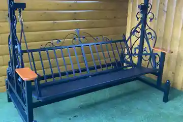
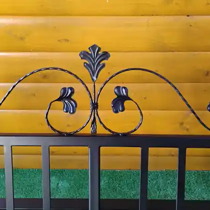

NEKOMERČNÝ HOBBY PROJEKT
Záhrada, dielňa a nápady, ktoré vznikajú pre radosť.
Ukazujem, čo si doma a v záhrade vyrábam, prerábam a skúšam. Bez predaja. Bez reklám. Len vlastné nápady, skúsenosti a inšpirácia.
Ukazujem, čo si doma a v záhrade vyrábam, prerábam a skúšam. Bez predaja. Bez reklám. Len vlastné nápady, skúsenosti a inšpirácia.
Začíname skutočným projektom z mojej dielne. Postupne sem pridám ďalšie výrobky, úpravy a nápady zo záhrady.

MOJA VÝROBANavrhol a vyrobil som pevnú kovovú hojdaciu lavičku na terasu. Konštrukciu som doplnil ozdobnými ornamentami, drevenými opierkami rúk a pohodlnými vankúšmi.
Chcel som spojiť pevnosť kovu s pohodlným miestom na oddych. Na fotografiách je vidieť aj samotnú konštrukciu bez vankúšov, takže vyniknú bočné ornamenty, operadlo a spôsob zavesenia sedacej časti.

Ozdobné prvky som použil na bočných častiach aj na operadle. Práve detaily dávajú lavičke vlastný charakter a odlišujú ju od jednoduchej kovovej konštrukcie.
Na webe používam len vybrané fotografie, ktoré najlepšie ukazujú celok a detail spracovania.Videá môžu byť nahraté priamo na web alebo prepojené z Facebooku. V návrhu zatiaľ používame iba makety.
Krátke video k tvojmu projektu.
Rýchla ukážka premeny.
Jedna vec, ktorá sa ti osvedčila.
Bez verejných účtov a bez automatického publikovania. Každý príspevok najprv uvidíš ty a až potom rozhodneš, či ho zverejníš.
Sem sa po schválení zobrazí fotografia a krátky popis od návštevníka.
Autor môže vystupovať menom alebo prezývkou podľa vlastného výberu.
Pošli fotografiu a pár viet. Nič sa nezverejní automaticky. Najprv si príspevok pozriem a až potom ho môžem zaradiť medzi nápady komunity.
Ak ťa zaujal môj postup alebo potrebuješ poradiť s podobným nápadom, môžeš mi napísať. Ide o hobby projekt — nič tu nepredávam.
Kontakt pre otázky a rady doplníme pred spustením novej verzie.
Facebook projektu